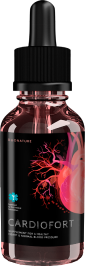
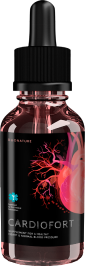
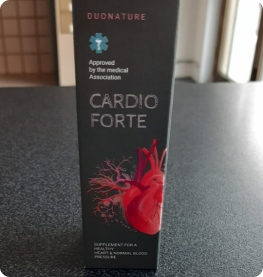

diário de Notícias
..


Incrível descoberta: cientista alemão descobriu uma receita única para a cura de doenças vasculares
Doenças cardiovasculares no passado: a primeira cura do mundo descoberta com base numa fórmula única de um cientista alemão
Entre 2020 e 2021, Portugal é embalado por um elevado número de mortos da COVID-19. Apesar das tentativas do Ministério da Saúde para resolver a situação, os trabalhadores médicos têm enfrentado o problema da taxa de mortalidade por doenças cardiovasculares que tem aumentado dramaticamente.
O problema agitou a sociedade e não pudemos ficar longe. Há cinco meses, lançámos uma investigação jornalística para encontrar a verdadeira causa do aumento da mortalidade. Há muito tempo que temos vindo a recolher informações atualizadas sobre a investigação em curso. Muitos especialistas não comentaram a situação, pelo que decidimos recorrer aos nossos colegas estrangeiros, os jornalistas da Alemanha.

A epidemia da COVID-19, que abalou o mundo, levou a novas descobertas científicas. Um cientista alemão empenhado no estudo dos vírus da subclasse do coronavírus desenvolveu uma fórmula única. Segundo a comunidade científica internacional, esta fórmula tornar-se-á um novo marco no tratamento de doenças cardiovasculares, uma grande ameaça e perigo para os europeus.
Hoje, convidámos Paul Robert Vogt, um cientista e cardiologista, que fez uma descoberta única que irá salvar dezenas de milhares de vidas. Fala-nos das peculiaridades da doença cardiovascular e da sua descoberta.
“Os vasos são a espinha dorsal do corpo”
Editorial: Bom dia, Dr. Paul Robert Vogt. Segundo muitos especialistas médicos, as doenças cardiovasculares aparecem em todas as pessoas após os 40 anos de idade. Será isto verdade?
Paul Robert Vogt: Bom dia! Não, não é verdade. A tensão arterial elevada e as doenças cardiovasculares são sinais do organismo. Permite-nos saber que os mecanismos internos não estão a funcionar como deveriam.
O que é que o médico diz quando um doente se queixa de doença cardiovascular? Afirma que a doença se deve à idade e prescreve medicação para baixar a tensão arterial. Mas estes medicamentos não curam, apenas tentam apoiar o corpo. Eu defendo que as doenças cardiovasculares podem ser curadas. Só é preciso compreender a relação entre os vasos sanguíneos e os sistemas internos de uma pessoa.
Editorial: Está a dizer que as doenças cardiovasculares irão desaparecer em breve?
Paul Robert Vogt: Não, isso não é possível. O que vai mudar é o curso da doença e como ela afeta o corpo humano. É isso que torna a minha descoberta tão inovadora. Nunca falo de dados não suportados: houve estudos formais e selecionámos um grupo focal para estudar os efeitos da droga, sobre o qual falarei um pouco mais tarde.
Editorial: Os estudos foram bem sucedidos?
Coração saudável
Infarto
Insuficiência cardíaca
Paul Robert Vogt: Paul Robert Vogt: Sim, consegui alcançar alguns resultados espantosos. Na fase de testes, 10 pessoas de diferentes idades foram apanhadas. Alguns tinham sintomas cardiovasculares primários, outros tinham doença arterial periférica pré-existente, doença cerebrovascular e outros ainda.
Para excluir completamente a possibilidade de obter dados não fiáveis, selecionei pessoas com diferentes estilos de vida: pacientes que fumavam, pessoas que viviam em cidades com uma má ecologia, pacientes com má hereditariedade.
Cada um dos 10 pacientes seguiu esta metodologia, e em 10 casos fomos bem sucedidos. Além disso, acompanhei os pacientes que participaram no estudo do medicamento durante um ano e meio.Cada um se livrou da sua enfermidade.
Editorial: Mencionou anteriormente que muitos médicos prescrevem medicamentos que não funcionam. Qual é a razão para isso?
Paul Robert Vogt: O facto é que os regulamentos que regem a prevenção e o tratamento das doenças cardiovasculares foram desenvolvidos há décadas. Nessa altura, a ciência era tecnicamente incapaz de determinar as técnicas ótimas. Aos pacientes foram e continuam a ser prescritos medicamentos clássicos que normalizam temporariamente a tensão arterial. E estes medicamentos não trabalham com a causa mas com a consequência. É preciso compreender que tomá-los não resolve o problema de forma drástica.
A minha prática mostra que em 90% dos casos um tal "tratamento" leva à necessidade de cirurgia. Tenho visto muitas pessoas que já foram operadas, mas isso ainda não resolve o problema. Imagine como se sente uma pessoa que gastou muito dinheiro em medicação ineficaz, passou por múltiplas cirurgias e ainda permanece no mesmo lugar em termos de doença. E em alguns casos, o resultado pode levar a uma deterioração significativa do bem-estar.
Apresentei os resultados de toda a minha investigação à comunidade científica internacional. Mais de 1000 médicos de todo o mundo já puderam ver que a minha fórmula funciona realmente. Tanto quanto sei, o Ministério da Saúde de 58 países está agora a discutir a introdução da minha droga nos seus programas nacionais de saúde.

Foto de Paul Robert Vogt de uma conferência internacional de cardiologia
Editorial: E os métodos universais? Já ouvi falar da utilidade dos tratamentos de fisioterapia. Então, serão eles inúteis?
Paul Robert Vogt: Não, eles trabalham. Mas o seu efeito é de curta duração. Apenas reduzem os sintomas, mascaram-nos. Sob a influência de tais procedimentos, o nosso cérebro recebe um sinal de que tudo está bem. Naturalmente, não se sentirá tonturas ou dores fortes e falta de oxigénio e outros sintomas. Mas, compreenda, isto agrava o problema: mascarar os sintomas não é uma cura. É apenas uma autodestruição.
Editorial: OK. Agora fale-nos da sua descoberta. Será realmente um avanço no tratamento das doenças cardiovasculares?
Paul Robert Vogt: Eu não me chamaria a mim próprio um descobridor. Sabe, no início da minha carreira interessava-me pela medicina asiática. Estudei os trabalhos dos seus representantes e métodos reconhecidos com elevada eficiência, que se baseiam em componentes naturais.
Ao contrário dos métodos clássicos, Cardiofort é adaptável. Isto significa que se destina à prevenção e tratamento de todos os tipos de doenças cardiovasculares, "adapta-se" às características individuais do corpo do paciente.
Admito que na fase de testes esperava que a eficácia do Cardiofort estivesse na ordem dos 60%-70%. Outros estudos clínicos mostraram que foram observadas melhorias em doentes de todos os segmentos.
 

Clivagem das placas de colesterol
Editorial: Então, Cardiofort é um medicamento que pode salvar milhares de pacientes do sofrimento? É como magia! Pode falar-nos da sua história?
Paul Robert Vogt: Não, nada de milagres, apenas ciência. Após a pandemia da COVID-19, cientistas e profissionais médicos foram encarregados de estudar as características deste tipo de coronavírus. Durante o estudo, descobri os seus fatores comportamentais.
Quando o vírus entra no corpo, o sistema imunitário humano começa a produzir glóbulos brancos, que são glóbulos sanguíneos especiais. Por vezes conseguem proteger-se, mas em muitos casos, o vírus avança. Depois começam a enviar 'sinais' através do corpo, sinalizando 'angústia'. Estas são chamadas citocinas.
Estas são moléculas proteicas únicas que desempenham um papel informativo. Quando este sinal aparece, uma pessoa começa a sentir todos os sintomas da doença. Quanto mais o vírus se espalha, mais citocinas o corpo produz. Desde que o sistema imunitário humano já começou a funcionar ativamente, as citocinas começam a transformar-se em substâncias perigosas para os seres humanos. Depois disso, começam as sérias complicações.
Editorial: O que é que isto tem a ver com Cardiofort ?
Paul Robert Vogt: A principal causa das doenças cardiovasculares são problemas circulatórios. Por exemplo, a hipertensão arterial leva a alterações nas paredes dos vasos sanguíneos e ao seu subsequente estreitamento, enquanto que a hipertensão causa espessamento das paredes do coração. Consequentemente, o principal objectivo do tratamento é normalizar a circulação sanguínea.
Ao desenvolver o fármaco, recorri aos dados obtidos durante o estudo COVID-19. Tal como no caso do vírus, a droga entrega as células sanguíneas certas aos vasos, desencadeando o processo de RGKL - regeneração de células e tecidos desgastados, o que muitas vezes leva a bloqueios dos vasos sanguíneos.

Tratamento cirúrgico para bloqueios
Placa aterosclerótica
Os bloqueios vasculares requerem cirurgias dispendiosas
Paul Robert Vogt: Além disso, o influxo de células sanguíneas como resultado do processo RGKL ajuda a limpar os vasos sanguíneos das placas ateroscleróticas. Outra característica é que as células sanguíneas saturam todos os vasos sanguíneos do corpo, o que leva a uma normalização geral do fluxo sanguíneo.
Por outras palavras, o princípio de acção do Cardiofort é fundamentalmente diferente do das drogas clássicas.
Editorial: Quem pode beneficiar de Cardiofort ?
Paul Robert Vogt: Primeiro que tudo, o medicamento tem uma eficácia cientificamente comprovada. Realizámos várias fases de estudos, e a eficácia foi observada em todos os inquiridos em diferentes fases de tratamento. Em segundo lugar, o Cardiofort é agora recomendado pelos principais cardiologistas. Em terceiro lugar, não foram observados efeitos secundários durante os ensaios. Por conseguinte, posso chamar Cardiofort um medicamento universal.
Editorial: De acordo com as instruções, será suficiente usar a droga três vezes por dia?
Paul Robert Vogt: Sim, é isso mesmo. Gostaria de salientar que os pacientes não devem esperar um efeito após a primeira dose. Isso é impossível - só os fabricantes das drogas fictícias prometem isso. Compreender: o corpo precisa de tempo para renovar tecidos e células vasculares. Portanto, aqueles médicos que prometem efeito em alguns dias, enganam você!
Resultados reais podem ser esperados após duas semanas de tratamento. É durante este período que se normaliza a pressão e neutralização dos sintomas primários. Durante as semanas seguintes, o efeito consolida-se e intensifica-se à medida que as células sanguíneas renovadas já apareceram no corpo. Os resultados dos testes mostraram que 80% dos pacientes sentiram melhorias no prazo de 14 a 20 dias após terem tomado o fármaco.
Editorial: Pode partilhar estatísticas detalhadas?
Paul Robert Vogt: Claro, porque apenas estudos comprovados provam a eficácia de qualquer droga.
Normalização do sangue e da pressão sanguínea
98,3% dos pacientes
Sem efeitos cumulativos e secundários
99,7% dos pacientes
Suspensão da progressão e progressão da doença
100% dos pacientes
Prevenção dos sintomas associados
99,5% dos pacientes
Normalização dos processos biológicos no organismo
98,9% dos pacientes
Editorial: Então o Cardiofort é sempre eficaz?
Paul Robert Vogt: É importante compreender que o corpo de cada pessoa é diferente. Mais uma vez, não estou a dizer que ajude absolutamente toda a gente logo à partida. Menos de 1% dos pacientes que foram testados tinham casos muito complicados. Precisavam de vários meses de terapia com o fármaco.
Eu nunca faço promessas vazias. Encorajo-vos a experimentar o Cardiofort pois pode realmente ajudar. Como médico, dói-me ver que muitos pacientes se dão a si próprios medicamentos desnecessários ou se submetem a cirurgias que podem causar danos ao corpo.
Editorial: Há alguma coisa que gostaria de desejar aos nossos leitores?
Paul Robert Vogt: Vou dar alguns conselhos úteis. O Cardiofort – não é apenas um produto; é um pacote completo de ingredientes e nutrientes naturais.

Folhas de Kumquat (fortunella).
Uma das plantas botânicas mais raras a crescer nas encostas das montanhas Huashan e Taishan no sudeste da China. Fortunella foi notada pelas suas propriedades benéficas por monges budistas chineses em manuscritos do século XII. O componente é responsável pelo processo RGRL, regula a regeneração de células e tecidos desgastados, e limpa os vasos sanguíneos de substâncias tóxicas.
Agripalma
Satura os vasos sanguíneos com os nutrientes necessários para o funcionamento normal do sistema vascular.
Extrato de azeitona
Tem um efeito antioxidante e antisséptico.
Extrato de espinheiro comum
Normaliza a tensão arterial, neutraliza a insuficiência cardíaca e a arritmia, tem um efeito sedativo.
Lúpulo comum
Fortalece o processo de disseminação de nutrientes através dos vasos sanguíneos.
Por favor note que deve comprar este medicamento no site oficial. Infelizmente, somos por vezes abordados por doentes que se queixam da falta de efeito do Cardiofort . Acontece então que compraram uma droga não originária. Peço-lhe que forneça um link para o site oficial, para que os leitores se possam livrar dos seus problemas de saúde.
Como médico, estou muito satisfeito por poder ajudar tantas pessoas. Finalmente, gostaria de desejar saúde a todos os que lerem esta entrevista. Lembre-se de que a sua saúde está nas suas mãos.
Comentários
João Vítor Gusmão: o meu médico recomendou-me que tomasse Cardiofort. Fiquei muito surpreendido com esta recomendação, porque nunca tinha ouvido falar desta droga antes. E hoje vi, por acaso, esta entrevista. Doutor, obrigado pela explicação detalhada, estou a planear encomendar dois pacotes.
4
..
Maria de Belem Assunção : Alguém já encomendou? Gostaria de comprar para os meus familiares, mas receio que a entrega seja longa.
..
Sebastiana Canela: Eu recebi-a em 2 dias e a minha mãe um dia mais tarde. Penso que depende da velocidade do estafeta e da distância de Lisboa.
..
Geraldo Santiago Sebastiana: Sim, tem razão. Verifiquei com o operador, a encomenda é enviada no dia seguinte, depois tudo dependerá do estafeta.
..
Fernanda Natal: O meu pai queixou-se de tensão arterial elevada e só tomou medicamentos para a baixar. Depois de tomar Cardiofort, a sua tensão arterial foi monitorizada e até agora tudo está normal.
10
..
Vitorino Belo Posso tomar Cardiofort se tiver arritmia devido ao stress?
..
Marcelo Arruda Vitorino: eu estava na mesma situação e consultei o meu cardiologista sobre o assunto. Ele disse que sim.
..
Lúcia Carneiro: Testei Cardiofort na minha própria experiência. Fui diagnosticada com hipertensão arterial quando tinha 37 anos. Após um curso, o meu médico disse que havia uma melhoria e por isso recomendou um segundo curso deste medicamento.
9
..
Luciano Rodrigues: Pode dizer-me o regime?
..
Lúcia CarneiroAs instruções indicam para tomar 30 gotas duas vezes por dia.
..
Lívia Amorim: ouvi falar pela primeira vez sobre Cardiofort há seis meses. Tive um problema com a minha arritmia. Não tinha esperança de qualquer melhoria, pois outras drogas não me ajudaram por mais do que um dia. Tive algum sucesso até agora e espero mantê-lo.
43
..
Manuel Barroso: sofreu de pressão e dores de cabeça durante alguns anos. A única coisa que tem ajudado entretanto tem sido a medicação hipotensiva. Há três semanas que estou a tomar Cardiofort e consigo ver algumas melhorias. Vou perguntar ao meu médico se posso ter vários cursos.
69
..
Júlia Amorim: Pude dizer por mim mesmo que tomei este medicamento para dois cursos e foi eficaz após o meu primeiro curso, mas o meu cardiologista aconselhou-me a melhorar os meus resultados.
..
Alexandre Brá: E se eu tiver tensão arterial elevada, posso corrigi-la com Cardiofort?
..
José de Sintra : Tive um ligeiro problema com a minha tensão arterial, por isso tomei Cardiofort como profilático. Lentamente a minha pressão sanguínea melhorou.
..
Victor Henriques: Fiz meio curso e todos os meus exames foram positivos.
..